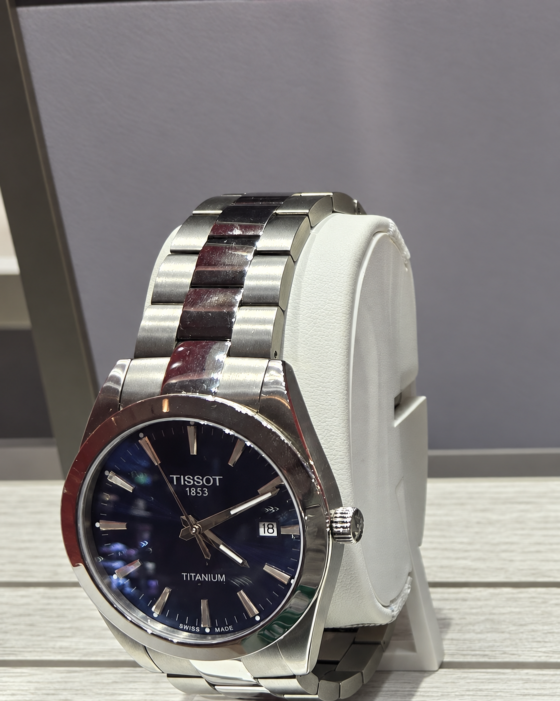

Tissot Gentleman
Titanium 40 mm
A blue-dial Swiss everyday watch in titanium: a smart choice for someone who values low weight, sapphire crystal and simple, dependable quartz ownership.
Reference
T127.410.44.041.00
Official Canadian price
CAD 750 · verified 10 Oct 2026
Movement
Swiss three-hand quartz with date and end-of-life battery indicator
Case
40 mm hypoallergenic titanium · 8.52 mm thick · 100 m water resistance

A light, composed first serious watch
Titanium is the defining feature here. It makes the 40 mm Gentleman notably lighter than a comparable steel watch and is naturally hypoallergenic. The blue dial and restrained indices let it move easily from office clothing to weekends without looking overly formal or sporty.
This is quartz, not automatic. That means it will not offer a visible mechanical movement or an 80-hour power reserve, but it delivers practical precision, a slim 8.52 mm profile and very little daily maintenance. The right choice depends on whether you want tactile mechanical ritual or uncomplicated reliability.
Lumio’s view: a polished, low-risk first Swiss watch when comfort and everyday use matter more than movement romance.
What you are getting
The official Canadian listing specifies a 40 mm titanium case and solid titanium bracelet, scratch-resistant sapphire crystal, 10 bar / 100 m water resistance, blue dial, Super-LumiNova hands, date display and a butterfly clasp with push-buttons. The watch weighs 90 g and is made in Switzerland.
Water resistance is useful for normal daily exposure, swimming and rain, but it is not a substitute for a purpose-built dive watch. Sapphire is highly scratch-resistant in everyday use, although it can still chip with a hard impact.
Who should choose it?
Choose this Gentleman if you prefer a cool, light bracelet and a blue dial that remains conservative enough for work. Consider one of the Powermatic 80 Gentleman models if the mechanical movement itself is the main reason you want a watch; they cost more, are thicker and require more attention, but offer a different ownership experience.
As with any online purchase, confirm availability, final Canadian price and return conditions directly with the seller before paying.
Learn and shop responsibly
- Tissot Canada — Gentleman 40 mm, T127.410.44.041.00 (price and specifications)
- Tissot Canada (official collection and retailer information)